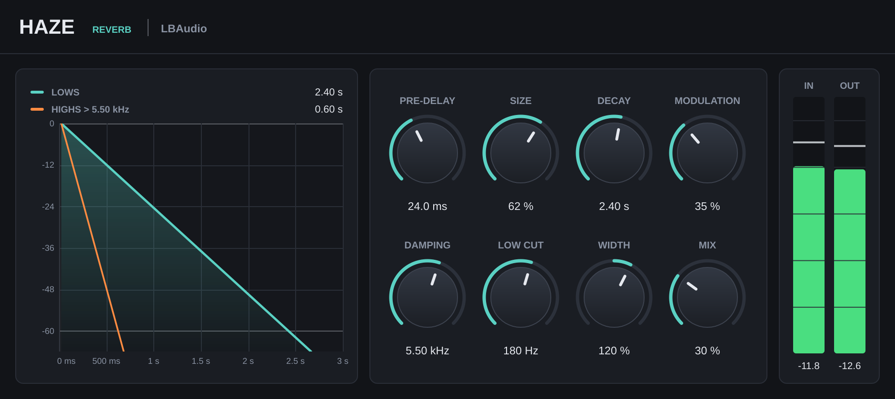

Reverb plugin · VST3 & AU
Hazeby LBAudio
A clean, natural reverb where Decay means seconds: set 2 s and the tail falls away in 2 s, at any size.
Instant download. Any local VAT is worked out at checkout. Or get the core 5 in one bundle.
- VST3
- AU
- Windows
- macOS
- Linux
- 0 samples latency

Hear it on a real track
The LBAudio track from the Haze video, run through Haze at three settings. Each version is matched to the original's loudness, so you hear the space, not a volume boost. Flip between them while it plays.
A small, tight space that puts the track in a real room without washing it out.
Watch it work
Short videos with the real plugin on screen. Every before-and-after is matched in loudness, so you hear what Haze does, not a change in volume.
See the tail
The graph draws how your reverb dies away, and redraws as you turn the knobs.
A decay you can see
Pre-delay, the low-frequency tail and the faster high-frequency tail are all drawn to scale, with the times written next to them.
Decay you can trust
Measured within 3% of the Decay knob at every size, from a small room to a 20-second wash.
A clean low end
Low cut keeps bass out of the reverb, and damping makes the highs fade four times faster above the frequency you set.
The controls
Eight knobs, no hidden pages. Size and Decay set the space; the rest shape how it sounds in the mix. Double-click any knob to reset it, or click a value and type one in.
| Control | Range | What it does |
|---|---|---|
| Pre-delay | 0 to 200 ms | A gap before the reverb starts, so vocals and drums stay clear of their own reverb. |
| Size | 0 to 100 % | How big the space is: the spacing of the echoes that build the tail. |
| Decay | 0.2 to 20 s | The time for the tail to fall by 60 dB (RT60). |
| Modulation | 0 to 100 % | Slow movement in the tail, which smooths out metallic ringing. |
| Damping | 1 to 20 kHz | Above this frequency the tail dies away four times faster, like a room with soft furnishings. |
| Low cut | 20 Hz to 1 kHz | Keeps low end out of the reverb so it doesn't muddy the mix. |
| Width | 0 to 200 % | Stereo spread of the reverb. 0 % is mono, 200 % is extra wide. |
| Mix | 0 to 100 % | Balance between dry signal and reverb. At 0 % the output is bit-identical to the input. |
Where to start
Four starting points. Set these, then adjust by ear.
-
Vocal space
Size 40–60 % · decay 1.5–2 s · pre-delay 20–40 ms · low cut 200 Hz
Pre-delay keeps the words clear while the tail fills in behind them.
-
Drum room
Size 20–30 % · decay 0.5–0.9 s · mix 10–20 %
Puts dry, programmed drums in a real-sounding room.
-
Ambient wash
Size 100 % · decay 8–12 s · modulation 50–70 % · damping 3–4 kHz
A huge, dark, slowly moving tail for intros, pads and transitions.
-
On a send
Mix 100 % on an aux track
Send several tracks to one Haze to put them in the same space.
Specs
One download for each system. No iLok, no account and no activation.
- Formats
- VST3 on Windows, macOS and Linux. Audio Unit (AU) on macOS.
- Windows
- Windows 10 or later, 64-bit.
- macOS
- macOS 10.13 or later. Runs natively on Apple Silicon and Intel.
- Linux
- 64-bit x86 (x86-64).
- Hosts
- Any DAW that loads VST3 or AU plugins, such as Ableton Live, FL Studio, Cubase, Reaper, Studio One, Bitwig and Logic Pro. Not available for Pro Tools (AAX).
- Latency
- 0 samples
- Channels
- Mono, stereo, or mono in to stereo out.
- Algorithm
- Eight-line feedback delay network with four-stage diffusion and modulated delays.
- Decay accuracy
- Within 3% of the Decay setting, measured at small, medium and largest sizes.
Questions
Anything else? Email support@lbaudio.co.uk.
How do I install it?
Unzip the download and copy Haze.vst3 into your VST3 folder: C:\Program Files\Common Files\VST3 on Windows or ~/Library/Audio/Plug-Ins/VST3 on a Mac. Logic users also copy Haze.component into ~/Library/Audio/Plug-Ins/Components. Then rescan plugins in your DAW. The zip includes these steps in INSTALL.txt.
How many computers can I use it on?
All the computers you personally own or use. See the licence agreement for the details.
Can I use it on commercial releases?
Yes. The music you make with Haze is entirely yours, with no royalties or credits owed.
Do updates cost anything?
No. Updates to Haze version 1 are free for everyone who bought it.
What if it doesn't work on my system?
Get in touch within 14 days of buying. If we can't get it working, you get a full refund. See the refund policy.
Does it work in Pro Tools?
Not yet. Pro Tools only loads AAX plugins, and Haze is VST3 and AU.
Insert or send?
Either. On an insert, set Mix to taste. On an aux send, set Mix to 100% and control the amount with the send level.
Haze
VST3 & AU for Windows, macOS and Linux. Instant download. Or get the core 5 in one bundle.